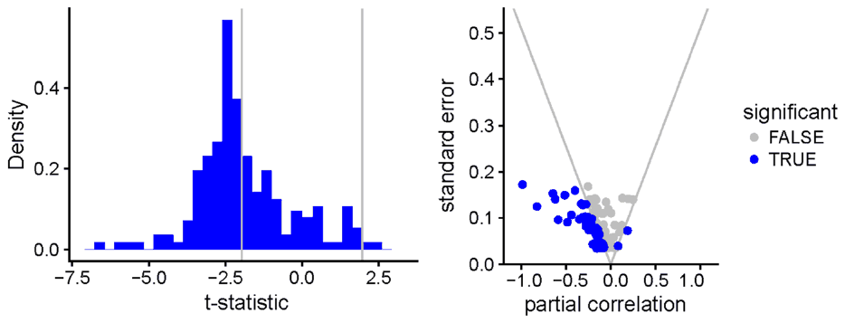

Central Bank Equity as an Instrument of Monetary Policy
Mojmir Hampl, Tomas Havranek (2020), "Central Bank Equity as an Instrument of Monetary Policy." Comparative Economic Studies 62(1): 49-68. https://doi.org/10.1057/s41294-019-00092-1.
Mojmir Hampl1,2 · Tomas Havranek3,4
1LSE Systemic Risk Center, London, UK
2Faculty of Management and Economics, Tomas Bata University, Zlin, Czech Republic
3Czech National Bank, Prague, Czech Republic
4Faculty of Social Sciences, Charles University, Prague, Czech Republic
© Association for Comparative Economic Studies 2019
Abstract
We examine the use of central bank equity as an unconventional monetary policy tool. In this setting, a central bank employs digital currency to transfer digital cash to each household, thus supporting consumption directly when needed. The asset side of the central bank's balance sheet remains unchanged, and the creation of new digital cash is offset by a decrease in central bank equity. The central bank thus incurs an immediate loss but does not take on any additional risks for its future income statements. We address several objections to this policy, paying particular attention to the claim that weakening the financial strength of the central bank endangers long-term price stability. Through a meta-analysis of 176 estimates reported previously in the literature, we find that central bank financial strength has not historically correlated with inflation performance.
Keywords: Central bank equity · Inflation · Seigniorage · Monetary policy · Helicopter money · Central bank digital currency
JEL Classification E42 · E52 · E58
Introduction
In the next recession, central banks will need unconventional monetary policy tools again. By that time, policy rates will hardly have risen high enough to create a sufficient cushion because of the depressed and perhaps even negative natural real rates of interest in all major economies (Holston et al. 2017). Any substantial increase in the natural rate would necessitate unlikely changes in demographics, inequality, globalization, infrastructure investment, relative capital price, and the spread between return on capital and the risk-free rate [see Rachel and Smith (2017), for a structured discussion of the decades-long fall in the natural rate]. In the USA, for example, the average response to a recession has involved cuts in the policy rate of 550 basis points (Reifschneider 2016). Consequently, even when using a relatively optimistic estimate of the natural real rate at 1%, the current research suggests that the zero lower bound will constrain future monetary policy 30–40% of the time (Kiley and Roberts 2017). Interest rate cuts will not suffice in restoring price stability when a downturn occurs.
Of course, central banks can resort to the same unconventional policies that were used in the aftermath of the late 2000s crisis: quantitative easing in large economies and foreign exchange interventions in small open economies. These measures appear to have been quite efficient [as shown, among others, by Caselli (2017) and Rodnyansky and Darmouni (2017)], but their incomprehensibility to the public further deepens the already daunting communication problems that central banks face (Braun 2016; Haldane 2017). Moreover, especially in the case of quantitative easing, it is difficult to model and predict the measure's transmission to the real economy. Central banks handled the Great Recession well, but next time they can do better.
Two major streams of literature offer alternative solutions to the zero (or, more precisely, effective) lower bound. The first stream argues that the bound is a policy choice and that central banks can resolve the problem by either abolishing cash or creating an exchange rate between cash and the money stored in bank accounts (Agarwal and Kimball 2015; Rogoff 2017). This is a straightforward solution, though negative rates may create other challenges, especially regarding financial stability, and the concept of an exchange rate between cash and electronic money could prove difficult for the public to grasp. The second stream of literature argues for an increase in the inflation target from 2 to 4% [as summarized, for example, by Ball (2014)]. Although this change would help to avoid the zero lower bound in some mild recessions, it is essentially a proposal to surrender price stability for reasons of technical incompetence. Of the 100 empirical studies that explicitly estimate optimal inflation, less than one-tenth recommend a rate of above 2% (Diercks 2017). The same survey reports that the estimations which specifically incorporate the zero lower bound find on average a desired rate of inflation of 1%. Clearly, 4% rate is far from optimal.
Here we discuss a third potential solution to the zero lower bound problem. We call it direct support of consumption, and it is a straightforward application of the helicopter drop idea by Friedman (1969). A helicopter money-based solution to the lower bound emerges as the optimal one in the traditional New Keynesian model plausibly enriched by behavioral inattention (Gabaix 2017) and brings about the first-best outcome: no output gap and inflation at the target. We envision that the central bank creates a digital currency and that all citizens are entitled to sign up for a corresponding digital wallet. In normal times, the wallets stay dormant, and the central bank blocks any transactions to the wallets from standard bank accounts to prevent risks to financial stability. In a recession and at the zero lower bound, the central bank starts to send a specified sum of digital currency to the wallets at regular intervals (say, weekly or monthly), later tapering the drops off as the economy recovers and inflation reappears. To the best of our knowledge, this is the first academic paper to describe such a policy option explicitly and in practical detail.
Direct support of consumption does not alter the size of the central bank's balance sheet (assets remain completely unchanged), but it immediately leads to an increase in (digital) cash enabled by a decrease in the central bank's equity.1 Hence, central bank equity is used directly as a monetary policy tool, not just as an absorber of the consequences of other policies. Transfers to bank accounts from digital wallets are blocked, and the funds in the wallets have limited time validity or are charged with large negative rates so that households are motivated to spend the funds quickly. In this way, the central bank can influence consumption and thus aggregate demand directly rather than relying on the complex transmission mechanism of quantitative easing and other more conventional unconventional measures.
Of course, many practical objections can be made to such a policy, and it is the purpose of the remainder of this paper to study them. The most serious objection is that weakening the financial strength of the central bank by depleting equity could lead to an inability to deliver price stability in the long run. Quite a few empirical studies have examined this topic, and we devote "Central Bank Financial Strength and Price Stability: A Meta-Analysis" section to a quantitative review of this literature. Our results suggest that there is little to no interplay between central bank financial strength and inflation. In "Bolstering Financial Strength with Private Shareholding" section, we discuss how, if considered necessary, central bank financial strength could be bolstered by allowing private shareholding. In "Using Central Bank Equity to Directly Support Consumption" section, we examine the remaining important objections to direct support of consumption: issues of independence, authority, and efficiency. "Concluding Remarks" section closes the paper.
Central Bank Financial Strength and Price Stability: A Meta-analysis
Several studies have investigated the relation between price stability and the financial strength of the central bank, and many (though not all) have reported that in a cross section of countries around the world, financial strength is negatively associated with inflation. Some of the studies emphasize that the finding is sensitive to the model specification. Although little can be said from this stream of literature about the direction of causality, a negative correlation would be worrisome for the proposal to use central bank equity as an instrument to provide more monetary stimulus (thus negatively affecting financial strength in the process). The purpose of this section, therefore, is to provide the first quantitative synthesis, or meta-analysis, of the empirical research on the relation between central bank financial strength and price stability. What we do not provide here is a detailed narrative literature survey and nuanced discussion of the methodology employed in these studies; readers interested in a such a treatment will want to inspect Benecka et al. (2012) or, for more recent developments in this area, the introductory sections of Pinter (2017).
As a first step, we searched for any empirical studies that estimate the nexus between central bank financial strength and inflation performance. We started with the Google Scholar database because it provides powerful full-text search, and looked for studies by using combinations of the following keywords: "central bank equity," "inflation," "central bank financial strength," and "monetary policy." We also inspected the EconLit and Scopus databases, but they did not provide us with any studies on top of what Google Scholar identified. Next, to ensure that we did not miss any important studies, we applied the "snowballing" technique and read through the references and citations of the studies returned from our Google Scholar search.
To be included in the meta-analysis, studies must present an empirical estimate of the effect and the corresponding standard error (or sufficient information so that we can compute the standard error ourselves). Without a standard error, we cannot use up-to-date meta-analysis techniques, so this is a crucial requirement. Apart from this requirement, we follow the advice of Stanley (2001) to rather err on the side of study inclusion in meta-analysis. We include both regression estimates and simple comparisons of groups of central banks with low and high degrees of financial strength (but later in the analysis we also focus on the subsample of the regression estimates). We include both studies that use inflation as the dependent variable and studies that focus on deviations from a historical monetary policy rule2 (again, later we introduce a subset of studies that only focus on inflation).
In order to use all available information, we also include one study written in Korean. Although neither of us is fluent in Korean, the main regression tables in the paper are presented in English, and Google Translate does a good job at providing us with the necessary context. In total, we collected 176 estimates from nine studies: Adler et al. (2016), Benecka et al. (2012), Ize (2007), Kluh and Stella (2008), Lee and Yoon (2016), Perera et al. (2013), Pinter (2017) and Stella (2003, 2011). We will call these the "primary studies." When we restrict our attention to the subsample of the examinations that focus on the relation between inflation (not deviations from an interest rate rule) and central bank financial strength, use regression analysis, control for other characteristics of central banks, and are presented in English, we are left with 146 estimates. We will call these the "comparable estimates."
Few estimates in our sample, however, are really directly comparable. Different studies use different units, definitions of financial strength, and transformations of the variables. Before we proceed with the analysis, it is necessary to convert the estimates into a single common metric. The t-statistic is sometimes used for this purpose in meta-analysis, but the t-statistic depends on sample size and only captures the statistical strength of the relationship. We use the partial correlation coefficient3 [described in detail, for example, by Doucouliagos (2011)], which is

adjusted for sample size and for which sensible guidelines exist (Cohen 1988; Doucouliagos 2011) that can help us evaluate the underlying strength of the relationship. The conversion is straightforward because all the primary studies report the number of observations used in the analysis, so we keep all 176 estimates in our sample.
The mean partial correlation coefficient is −0.14, and the median is −0.13 (for the sample of comparable estimates we obtain −0.12 for both the mean and median); both are statistically significant at any reasonable levels. But correlation coefficients around −0.13 can be considered small according to both Cohen's and Doucouliagos's guidelines. Doucoualigos (2011) shows that roughly 60% of the empirical studies in economics (on any subject) find on average larger effects than 0.13. Still, 55% of all the estimates in this stream of literature are negative and statistically significant at the 5% level, and 86% of the estimates are negative irrespective of statistical significance. Only two estimates are positive and statistically significant. Nevertheless, Fig. 1 casts doubt on the relevance of these simple summary statistics. In particular, a histogram of the t statistics shows a drastic drop at approximately −2, right at the point at which the estimates cease to be statistically significant. With 176 observations, the central limit theorem should kick in, and we should observe a practically normal distribution of the t-statistics. What is going on here?
The most likely culprit is publication bias. It is notoriously difficult in economics to publish nonsignificant results or results inconsistent with a predominant theory; therefore, authors across various fields have been found to choose which results to report based on the estimates' sign and statistical significance, even in drafts and working papers (Ioannidis et al. 2017).4 To be sure, publication bias does not equal data manipulation or fraud and can represent an objectively optimal strategy for authors trying to convey their findings to policy makers (Furukawa 2019). Moreover, some estimates, though perfectly possible given the sampling error, make little economic sense, so it also makes little sense to build the main conclusion of the paper upon them. But such selective reporting leads to an exaggeration of the mean reported effect, and any literature review is incomplete (and likely biased) that does not attempt to correct for this bias.
In the case of the nexus between inflation performance and central bank financial strength, significantly negative results fit neatly into the mainstream view. Indeed, when the central bank is concerned about its potential or realized losses, it can improve its finances by adopting a more dovish monetary policy compared to what otherwise would be optimal. Nonsignificant results are perhaps less interesting to editors and referees, but they are plausible as well [for example, Hall and Reis (2015) argue that risks to the financial stability of central banks are remote in practice, although they discuss a scenario in which the decision of the Swiss National Bank to suddenly abandon its peg was influenced by a perceived risk to its financial stability]. In contrast, a theory is yet to be developed that would predict a more hawkish stance for financially weak central banks.5 Significantly positive estimates are thus implausible.6
But we cannot observe the estimates that authors choose to hide in their file drawers. So how can we correct for publication bias? We exploit the property of the methods used by the authors of the primary studies: the ratio of the point estimate of the effect in question to its standard error follows a t-distribution. This property also extends to the partial correlation coefficients. As a consequence, the point estimate and the standard error should be statistically independent quantities. A simple regression of the estimates on their standard errors thus delivers a valid test of publication bias (Egger et al. 1997). The constant of this regression can be interpreted as the mean effect corrected for publication bias (Stanley 2005, 2008); it is the mean effect conditional on the lowest standard error (thus maximum precision) in the literature.
The results of this simple test of publication bias are shown in Table 1. In the first column, we run an ordinary least squares regression. Although we have 176 observations at our disposal for this regression, they are drawn from only 9 studies, and we must consider potential within-study correlation. Because the number of studies is limited, we cannot use classical standard errors clustered at the study level but must employ bootstrapping instead. The result is striking: we find very strong publication bias [according to the classification by Doucouliagos and Stanley (2013)] in favor of negative results and, after correcting for the bias, no underlying relation between central bank financial strength and inflation performance. Studies with low precision tend to select larger negative point estimates, giving rise to the negative correlation.
| (1) OLS | (2) FE | (3) Study | (4) Precision | (5) IV | |
|---|---|---|---|---|---|
| Standard error (bias) | −2.354*** | −2.392 | −2.773*** | −2.321*** | −2.081*** |
| (0.589) | (1.708) | (0.441) | (0.380) | (0.405) | |
| Constant (corrected mean) | 0.0261 | 0.0288 | 0.0428* | 0.0238 | 0.00693 |
| (0.0316) | (0.0954) | (0.0245) | (0.0197) | (0.0228) | |
| Observations | 176 | 176 | 176 | 176 | 176 |
| R2 | 0.29 | 0.29 | 0.40 | 0.30 | 0.28 |
| RMSE | 0.13 | 0.12 | 0.12 | 0.10 | 0.13 |
The dependent variable is the partial correlation coefficient. Bootstrapped standard errors are shown in parentheses (accounting for within-study correlation among the estimates)
OLS = ordinary least squares regression of estimates on their standard errors. FE = study fixed effects. Study = weighted by the inverse of the number of estimates reported per study; each study has the same weight. Precision = weighted by inverse variance; more precise studies are given more weight. IV = the inverse of the square root of the number of observations is used as an instrument for the standard error
*p < 0.10, **p < 0.05, ***p < 0.01
In the second column, we add study fixed effects to filter out the characteristics idiosyncratic to individual studies (such as study quality). Inevitably, we lose substantial power, not only because we add additional dummy variables, but also because we have to omit studies that report only one estimate. The point estimates resulting from this second specification are close to the first one, but their statistical significance decreases threefold. Once again, the corrected mean effect of central bank financial strength on inflation is mildly positive and close to zero.
In the third and fourth columns, we employ weighted least squares because plausible arguments can be made for giving certain estimates more weight than others. In particular, some studies report many estimates, while, as we have noted, there are some studies with just one estimate. An appealing solution involves weighting the regression by the inverse of the number of estimates reported per study. In this way, each study becomes equally represented. Similarly to the baseline OLS results, we obtain evidence for strong and statistically significant publication bias, while the mean underlying effect of central bank financial strength is positive—this time even statistically significant at the 10% level. Next, we weight the estimates by inverse variance. This weighting scheme is widely used in meta-analysis (Stanley and Doucouliagos 2014) because it offers two intuitive properties: it corrects for the obvious heteroskedasticity present when regressing estimates on their standard errors, and it gives more precise estimates more weight. The results, presented in the fourth column, are for all practical purposes identical to the baseline.
Finally, in the fifth column we present an instrumental variable exercise. The IV specification is crucial to the credibility of our results because in this meta-analysis we do not control for the characteristics of the data and methods employed in the primary studies (given the small number of studies, we do not have sufficient power to do so properly). If a choice of method affects both the point estimate and the standard error in the same direction, the correlation between point estimates and standard errors that we document and present as evidence of publication bias may be spurious. The problem is partly alleviated by the fixed effects estimation, but the endogeneity can easily be of within-study origin, in which case fixed effects do not help. Therefore, we need an instrument for the standard error: a variable that would not be correlated with method choices but would be correlated with the standard error itself. A straightforward candidate is the inverse of the square root of the number of observations in the primary study (following Havranek 2015) because it is correlated with the standard error by definition (in our data set, the correlation coefficient exceeds 0.8) but is unlikely to be substantially correlated with the method choices. The IV estimation suggests slightly smaller publication bias compared with the previous cases and a corrected mean effect of central bank financial strength of almost precisely zero.
| (1) OLS | (2) FE | (3) Study | (4) Precision | (5) IV | |
|---|---|---|---|---|---|
| Standard error (bias) | −2.705*** | −2.438 | −2.517*** | −2.455*** | −2.400*** |
| (0.549) | (1.906) | (0.562) | (0.406) | (0.401) | |
| Constant (corrected mean) | 0.0490 | 0.0321 | 0.0334 | 0.0332 | 0.0298 |
| (0.0299) | (0.106) | (0.0297) | (0.0205) | (0.0212) | |
| Observations | 146 | 146 | 146 | 146 | 146 |
| R2 | 0.41 | 0.41 | 0.37 | 0.34 | 0.40 |
| RMSE | 0.11 | 0.11 | 0.11 | 0.08 | 0.10 |
The dependent variable is the partial correlation coefficient. Bootstrapped standard errors are shown in parentheses (accounting for within-study correlation among the estimates)
OLS = ordinary least squares regression of estimates on their standard errors. FE = study fixed effects. Study = weighted by the inverse of the number of estimates reported per study; each study has the same weight. Precision = weighted by inverse variance; more precise studies are given more weight. IV = the inverse of the square root of the number of observations is used as an instrument for the standard error
*p < 0.10, **p < 0.05, ***p < 0.01
In Table 2, we repeat the analysis described above for the set of comparable estimates (that is, only considering specifications that use inflation as the dependent variable and control for other characteristics of central banks, not just financial strength). Once again, the results are similar to the baseline case, here with somewhat stronger evidence of publication bias.
A caveat of our results is that we use a linear approximation of the underlying selection process that gives rise to publication bias (the simple linear regression of the point estimates on their standard errors). In reality, publication bias is a nonlinear function of the standard error, as documented formally by Stanley and Doucouliagos (2014) and, in our case, graphically on the right-hand side of Fig. 1. Stanley and Doucouliagos (2014) also show that the problem stemming from the use of the linear approximation disappears when the corrected mean effect approaches

zero—this is precisely what we observe in the literature on central bank financial strength and inflation. They recommend using second-order approximation only in the case when the first-order approximation indicates the existence of a nonzero corrected mean.
Recently, Andrews and Kasy (2019) have proposed a median-unbiased estimator of the mean effect corrected for publication bias. When applied to our data (which we believe is the first application of this new technique outside the original paper), we obtain a corrected mean estimate of −0.039 with a standard error of 0.018—thus borderline statistical significance at the 5% level. This is also close to the average of the most precise estimates as shown in the so-called funnel plot [Fig. 2; the asymmetry of the funnel plot shows the apparent publication bias because in the absence of publication bias, all imprecise estimates, negative and positive, should be reported with the same frequency and show more dispersion than the densely distributed precise estimates; see Stanley and Doucouliagos (2010)]. A partial correlation of −0.039 is considered negligible based on the guidelines of both Cohen (1988) and Doucouliagos (2011).
The technique of Andrews and Kasy (2019) allows us to say more about the sources of publication bias. We compare the ceteris paribus publication probability of the estimates that are, respectively, significant at the 5% level and negative, nonsignificant and negative, nonsignificant and positive, and significant at the 5% level and positive. The estimates that are significantly positive are the most counterintuitive, so it is instructive to normalize the publication probability of this group to one. Consequently, we find that the nonsignificantly positive estimates are approximately twice as likely to be published, nonsignificantly negative estimates three times as likely to be published, and significantly negative estimates 14 times as likely to be published. This formal evidence lines up nicely with what we see in Fig. 1 (preference for significant results) and Fig. 2 (preference for negative results). In sum, when all the available research is considered and corrected for publication bias, we obtain no evidence of any practically important nexus between central bank financial strength and inflation performance.
This observation is corroborated by the fact that several central banks in industrialized countries (for example, in Chile, Israel, and the Czech Republic) have provided a low-inflation environment successfully even with occasionally negative levels of equity. It is worth noting at this point, however, that in other regions of the world, central bank financial problems have turned out to be quite prominent for decades. In these widespread cases, central banks have proved to be unable to meet their most basic functions (among others, the supply of banknotes) due to financial distress. They have changed policy in order to reduce losses and, in at least one case, the Philippines, have even been forced into liquidation (Belke and Polleit 2010).
Bolstering Financial Strength with Private Shareholding
So, some readers will argue that a link between inflation and central bank financial strength in an average country may still exist but that present econometric methods are unable to uncover it because of measurement errors and misspecifications (for example, misspecifications related to the treatment of endogeneity, since good external instruments for central bank financial strength are hard to find). This assertion is known as the "iron law of econometrics" (Hausman 2001), which can be applied to any question in empirical economics and finance—and for which, by definition, we have no evidence. Nevertheless, central banks concerned about the implications of their unconventional policies on their financial strength may address this problem through yet another unconventional approach: by providing the market with new equity rather than new reserves. Of course, central banks can also be recapitalized by the government, but relying on the government is what a central bank needs to avoid if it intends to pursue monetary policy independently. In many countries, recapitalization by the government would also require legislative changes.
A potential stake for private entities in a central bank seems like an oddity today, but most major central banks were created as joint-stock companies with private shareholders. Beginning with the Reserve Bank of New Zealand in 1935 and the Central Bank of Denmark in 1936, nevertheless, almost all central banks have been nationalized (the latest example is the Austrian National Bank, fully nationalized in 2010). As of 2019, we are aware of only 8 central banks that retain private shareholders: the National Bank of Belgium, Bank of Greece, Bank of Italy, Bank of Japan, Swiss National Bank, South African Reserve Bank, Central Bank of Turkey, and of course the US Federal Reserve. Only 5 of them formulate their own monetary policy.
In none of these countries do private shareholders directly influence monetary policy or other important policies of the central banks. Indirect influence, however, exists in some jurisdictions, especially in the case of the Federal Reserve, where commercial banks hold stakes in the twelve district banks. They nominate three out of nine members of each Reserve Bank's board, and the boards, in turn, nominate the presidents of the Fed districts, who participate in nationwide policymaking [see, for example, Blinder (2010), who criticizes this practice]. But in most other countries, the role of private shareholders is limited to approving financial statements.
The literature on the effects of private shareholding on central bank behavior is extremely thin. The only econometric study we are aware of, Bartels et al. (2017), finds no difference whatsoever between the behavior of central banks that are fully owned by the government and those that have private shareholders. Curiously, the researchers report that the central banks with private shareholders, on average, transfer more funds to the government—but this finding is not robust to plausible changes in the regression specification. In fact, the results of Bartels et al. (2017) are so perfectly nonsignificant that one must applaud the authors for reporting them, especially in light of the widespread publication bias in economics that we documented in the previous section. Narrative studies on private ownership in central banking (Rossouw 2016, 2018) also suggest that the performance of central banks does not depend on whether or not they have private shareholders. There is simply "no smoking gun," as the title of Bartels et al. (2017) reads.
Therefore, based on the available research, it is neither unprecedented nor harmful for central banks to issue shares to private entities. When conducting unconventional monetary policy, central banks can issue shares instead of reserves and provide them in exchange for securities (in the case of quantitative easing) or foreign currency (in the case of foreign exchange interventions). Such shares would bear no voting rights related to public policies, but, in order for the shares to have value, shareholders would be allowed to participate in the future profits of the central bank. Currently, the dividends for private shareholders of central banks are typically capped (Rossouw 2016) so that the shares provide a stream of fixed income rather than standard dividend yields: the dividend reaches up to 5% of paid-up capital in Japan, 6% in Switzerland, 10% in South Africa, 10% in Italy (an additional dividend not exceeding 4% of the amount of reserves can be awarded), 12% in Turkey, 12% in Greece (an additional dividend can be awarded), and 6% in Belgium (plus a second dividend of 50% of the net proceeds after tax).
The Belgian model most closely reflects the way dividends are assigned in private companies, and a similar or simpler design would ensure that the shares issued by central banks are valuable. Providing new equity in exchange for assets would boost the financial strength of central banks exactly at the time when they take on more risk: exchange rate risk in the case of foreign exchange interventions and interest rate risk in the case of quantitative easing, policies that, as a side effect, turn central banks into hedge funds.
In sum, so far we have established that, based on available evidence, depleting equity is not a problem for central banks, certainly not in developed countries. In the following section, we turn to investigating how this finding can be used to assist monetary policy during the next recession.
Using Central Bank Equity to Directly Support Consumption
The title of this section, of course, alludes to the famous helicopter money drop idea formulated 50 years ago by Friedman (1969). The academic literature has been surprisingly shy on the topic: the RePEc database lists merely 19 published articles that somehow mention a variant of a helicopter money drop in the title, abstract, or keywords—compared with more than 500 published articles on quantitative easing. When discussed at all, helicopter money is almost always laid out in terms of a quasi-fiscal operation in which the drop is executed by a government and financed by the central bank through irreversible bond purchases. This gives rise to confusing labels such as "quantitative easing for the people." For clarity, we use the term direct support of consumption to denote a helicopter money policy executed solely by the central bank as a monetary tool in Friedman's (1969) original sense.7
Only a handful of studies examine the effects of helicopter money rigorously. To the best of our knowledge, Buiter (2014) provides the first such analysis and concludes that under plausible assumptions, the policy works reasonably well. English et al. (2017) also find benefits but stress the risks of monetary–fiscal cooperation. Galí (2017) concludes that helicopter money has greater benefits than traditional debt-financed fiscal stimulus and finds no major side effects. In an important contribution, Gabaix (2017) introduces a behavioral extension of the traditional New Keynesian model and shows how this extension solves several paradoxes inherent in the traditional model. In Gabaix's model, helicopter money is extremely effective. Useful recent discussions of helicopter money are provided by Mayer (2016) and Belke (2018).8
While building on the results of the meta-analysis reported in this paper, here we examine the four most important objections to direct support of consumption (helicopter money conducted solely by the central bank so that the total size of the central bank's balance sheet does not change, assets are unaffected, the money base increases, and equity decreases), including issues of (1) stability, (2) independence, (3) authority, and (4) efficiency. These issues correspond to the following claims: (1) Depleting equity renders the central bank financially unstable and thus unable to tame inflation in the long run. (2) Using direct support of consumption endangers central bank independence. (3) The central bank is not supposed to decide how funds are distributed among households. (4) Direct support of consumption will not help the economy anyway. We discuss each of these claims in turn.
Stability
After going through the previous two sections, the reader knows that we consider this objection the most important. In fact, the previous two sections can be viewed as extensions of this paragraph. The available research taken as a whole shows no threat to long-term inflation performance from decreasing central bank financial strength (a decrease that is implied by using central bank equity to directly support households' consumption). Moreover, central bank financial strength can in principle be bolstered by allowing private shareholding. It is also worth noting that unlike quantitative easing or foreign exchange interventions, direct support of consumption does not force the central bank to take on additional risk: the asset side of the balance sheet does not change. The financial loss is known and controlled directly by the central bank at the time of applying this unconventional measure. In addition, the central bank's loss translates directly to a gain for all households in the country, so the immediate accounting effect on the economy as a whole is zero. These arguments taken together imply that direct support of consumption does not endanger the financial stability of the central bank, certainly not more than other unconventional monetary policy measures.
Independence
We have noted that the academic literature typically does not discuss direct support of consumption but the related issue of a fiscal stimulus financed by the central bank. Such a stimulus, of course, necessitates the cooperation of fiscal and monetary policy and therefore by definition introduces a danger to central bank independence. We believe the independence problem largely disappears when direct support of consumption is put in the spotlight. Yes, most central banks do not possess the immediate technical means to send funds to all households. Many central banks operate central registries of bank accounts on behalf of the government, although in most cases they would need government permission to use these data. Here we see room for recent innovations in financial technology, especially digital currencies (see, for example, Hampl 2018)—a central bank digital currency would make it easy for each citizen to set up an account at the central bank, thus rendering direct support of consumption technically feasible with no cooperation with the government whatsoever.
A common objection to helicopter money is that the government would get used to this policy and could force the central bank to finance fiscal stimulus even when the zero lower bound does not bind and the country is not in a recession. Again, conducting helicopter drops solely by the central bank alleviates this concern, and the central bank should make it clear that direct support of consumption is an extraordinary measure that is only imaginable in a downturn. Governments like expansionary monetary policy, but that is a poor reason to rule it out.
It is true that in some jurisdictions, the central bank's charter would need to be altered to specifically allow direct support of consumption (if for no other purpose then to at least make central bankers feel safe and comfortable with the policy). Of course, other unconventional monetary policy tools that have been used to combat low inflation, such as quantitative easing or currency depreciation, also do not tend to be explicitly allowed in central banks' charters. We believe that in contrast to this second objection, direct support of consumption would strengthen central bank independence.9 One of the major virtues of the policy is that it is transparent and easy to explain. It would contribute to the public's understanding of the usefulness of the central bank's actions: if the economy is in a recession and inflation below target, the central bank needs to support the purchasing power of households to restore economic stability. Quantitative easing and currency depreciation are communication nightmares in comparison.
Authority
Because academic journals tend to shun the simple idea of direct support of consumption, discussions of this policy have been relegated to blog posts (most prominently, Bernanke 2016; DeLong 2016; Lonergan 2016). A recurring objection in the discussion is that the central bank has no authority to decide on the distribution of funds. That right, it is claimed, should belong to the government. But the central bank decides on the distribution of funds all the time, in every decision about monetary policy. An increase in the interest rate makes creditors better off at the expense of debtors. A decision to do nothing when inflation is low and rates hit the effective lower bound immediately hurts the young (whose wages grow more slowly, probability of job loss increases, and access to loans worsens compared to what would otherwise be the case) and helps, at least in the very short run, older people with higher savings (who get higher real returns than what would otherwise be the case). Direct support of consumption only makes these transfers explicit, transparent, and probably fair in most peoples' eyes because each person receives the same amount: akin to a dividend paid by the central bank to citizens (who, in a democracy, have an equal share in state institutions).
Efficiency
In a model with fully rational expectations, direct support of consumption has no impact because of the Barro-Ricardian equivalence: when not used for direct support of consumption, central bank profits are at some point transferred to the government. Because the government must forgo these funds, ceteris paribus it will need to raise taxes. Expecting this tax increase, households will save more, thus offsetting the effects of the policy. Some additional assumptions will deliver an impact, although it never is really substantial in traditional New Keynesian models. Of course, anyone who has read the works of Kahneman and Tversky knows that not only has psychological research has found people to sometimes behave irrationally, but that the irrationality is systematic. In an important contribution, Gabaix (2017) shows how a simple incorporation of limited rationality eliminates the many counterfactual implications of traditional New Keynesian models. Among other things, limited rationality brings a strong role for direct support of consumption: it is now the optimal form of monetary policy at the zero lower bound.
The theory is one thing, but to implement direct support of consumption, central banks would need precise estimates of the proportion of the helicopter drop that would be spent by households. In a large survey, van Rooij and de Haan (2016) ask Dutch households how they would behave in such a hypothetical situation. The authors conclude that only about 30% of the amount sent to households would be spent—not much, but still much more than what a traditional New Keynesian model would suggest. It is perhaps more instructive to look at how households behaved following a stimulus that actually occurred. The most appealing recent experiment is the economic stimulus payments of 2008 in the USA in which individuals received USD 300–600. Parker et al. (2013) analyze this stimulus and estimate an immediate marginal propensity to consume from these payments to lie at approximately 0.7. Based on this evidence, households can be expected to spend approximately 70% of the helicopter drop immediately.
Moreover, the central bank can nudge households to spend an even larger portion of the drop. Using a central bank digital currency, each helicopter drop can essentially become a computer program. For example, the validity of the funds can be limited to a couple of months or so; alternatively, substantial negative interest rates can be charged on these drops. The central bank can decide to limit transactions from the central bank digital currency to bank accounts, allowing their use only for consumption (or particular items of consumption, which would effectively bring the new digital wallets close to Sodexo cards).10
How should helicopter money be distributed? Of course, one could imagine various distribution rules. For example, the drop can be proportional to existing money holdings, or, in contrast, it can be limited to households with low liquid wealth [to alleviate their liquidity constraints; such households have arguably the largest marginal propensities to consume out of such helicopter drops—as documented, for example, by Parker et al. (2013)]. But the obvious choice is to send each citizen the same amount. Such a distribution rule has the intuitive appeal of being fair in most people's eyes; also, as we have noted, such a helicopter drop can be viewed as a dividend paid by the central bank to citizens (who, in a democracy, each have an equal share in state institutions). Since the central bank would use digital currency to distribute the drops, ownership of a bank account would not be necessary—this is important because, in many countries, a small but significant proportion of the population (especially the elderly) do not use bank accounts; the central bank would also avoid the need to cooperate with commercial banks. Citizens would still have to register online for the new digital wallet, but the details would be published by the central bank sufficiently (at least several weeks) in advance and the process could be made fast and simple. Most likely, the central bank would execute a trial small helicopter drop at first, thus allowing the population to get comfortable with the new system before the real start of direct support of consumption.
The central bank could also limit transfers in the opposite direction, from bank accounts to the central bank digital currency, in order to prevent digital bank runs (Hampl 2018). More research is needed, especially on the potentially increased substituted savings from households' non-helicopter income. But the available evidence (Parker et al. 2013, and related studies) suggests to us that a consumption boost in excess of 50% of the funds sent via direct support of consumption is definitely feasible, suggesting reasonable efficiency. On top of all that, direct support of consumption would support consumer confidence much more than other unconventional monetary policy measures, which is especially important to escape a deflationary spiral in a crisis.
Concluding Remarks
In this paper, we take Friedman's idea of helicopter money seriously and discuss how it could be implemented in a simple way by a modern central bank without the need to cooperate with the government: we call this monetary policy tool direct support of consumption. We provide a meta-analysis of the empirical literature on the nexus between central bank financial strength and price stability. After correcting the literature for publication bias, we find that the mean estimate in the literature is consistent with the notion that depleting central bank equity does not compromise long-run inflation performance.
Of course, this is not to say that central bank equity is irrelevant to inflation when used as a monetary policy tool, not just as a buffer for other policies. On the contrary, we discuss how equity could be the medium through which direct support of consumption operated and how its use would create an immediate boost to aggregate demand and hence inflation pressures. We stress that we can only imagine the use of this tool in a recession, and we would not recommend its deployment, for example, in 2016 Europe—even though at that time the ECB was still quite seriously constrained by the effective lower bound. But we argue that direct support of consumption offers many virtues and advantages compared to other forms of unconventional monetary policy, especially obliterating the need to rely on a complicated transmission mechanism, allowing much easier communication to the public, and boosting consumer confidence when most needed.
Still, direct support of consumption is no free lunch, no manna falling from heaven. It causes a direct loss for the central bank, and a loss of the central bank equals foregone government revenue in the future [see Belke (2018), for an excellent discussion of the cons of helicopter money]. Nevertheless, it is important to bear in mind that all types of monetary policy have fiscal consequences, and it is necessary not to dwell on the immediate accounting effects but consider them together with the medium-term effects on the overall economy (including a boost to tax revenue). Moreover, since the counterparty of the helicopter drop are the country's citizens, the immediate accounting effect on the country level is zero (which does not necessarily hold for FX interventions or QE). Finally, it is unclear in many jurisdictions whether direct support of consumption would be compatible with current central bank statutes—but the same argument held for QE 10 years ago.
We believe that interdisciplinary future research on this topic is required. First, as we have noted, the legality of direct support of consumption will certainly come under scrutiny in some jurisdictions, and more clarity on this issue will help central bankers give the measure serious thought. Second, the idea of a central bank digital currency is still in its infancy, and it is unclear how the currency should be technically designed. Should it be based on a distributed ledger or a centralized system? How should digital wallets be created for each citizen with minimal costs (in terms of money and time) for the central bank and no need to cooperate with the government? Third, inputs from psychology and behavioral economics are necessary to design direct support of consumption in such a way that households spend as much of the drop as possible—but also without encouraging the consumption of goods that people do not actually need. Our optimistic expectation is that these technical challenges will be resolved before the next recession arrives. Nevertheless, we concur with the assessment of Turner (2015), who argues that the most important issues with helicopter money-related schemes are not technical but political.
Acknowledgements
This research was conducted when Hampl was Vice-Governor of the Czech National Bank, and both authors gratefully acknowledge the support from the Bank (though the views expressed here are not necessarily those of the Bank). Havranek also acknowledges support from the Czech Science Foundation (Project 18-02513S) and Charles University (Project Primus/17/HUM/16). We thank Volha Audzei, Vit Barta, Vojtech Benda, Oldrich Dedek, Michal Franta, Tomas Holub, Nikolaos Kyriazis, Jiri Schwarz, and participants of a Czech National Bank seminar for useful comments, and a referee of Comparative Economic Studies for an exceptionally detailed report.
REFERENCES
- Adler, G., P. Castro, and C. Tovar. 2016. Does Central Bank Capital Matter for Monetary Policy? Open Economies Review 27(1): 183–205.
- Agarwal, R., and Kimball, M. 2015. Breaking Through the Zero Lower Bound. IMF Working Papers 15/224, International Monetary Fund.
- Andrews, I., and Kasy, M. 2019. Identification of and Correction for Publication Bias. American Economic Review (forthcoming).
- Bacchetta, P. 2018. The Sovereign Money Initiative in Switzerland: An Economic Assessment. Swiss Journal of Economics and Statistics 154: 3.
- Ball, L. 2014. The Case for a Long-Run Inflation Target of Four Percent. IMF Working Papers 14/92, International Monetary Fund.
- Bartels, B., Weder di Mauro, B., and Eichengreen, B. 2017. No Smoking Gun: Private Shareholders, Governance Rules and Central Bank Financial Behavior. In Annual Conference 2017: Alternative Structures for Money and Banking, Economic Association.
- Belke, A. 2018. Helicopter Money: Should Central Banks Rain Money from the Sky? Intereconomics: Review of International Trade and Development 53(1): 34–40.
- Belke, A., and T. Polleit. 2010. How Much Fiscal Backing Must the ECB Have? The Euro Area is Not the Philippines. Économie Internationale 124: 5–30.
- Benecka, S., Holub, T., Kadlcakova, N., and Kubicova, I. 2012. Does Central Bank Financial Strength Matter for Inflation? An Empirical Analysis. CNB Working Papers 2012/03, Czech National Bank, Research Department.
- Berentsen, A., and Schar, F. 2018. The Case for Central Bank Electronic Money and the Non-case for Central Bank Cryptocurrencies. In Federal Reserve Bank of St. Louis Review, Second Quarter 2018, 100(2), pp. 97–106.
- Berger, R. 2016. Think Act—The Rise of Cryptofinance in Central Banking. Munich: Roland Berger.
- Bernanke, B. 2016. What Tools Does the Fed Have Left? Part 3: Helicopter Money. Brookings Institution 11: 1–14.
- BIS. 2018. Cryptocurrencies: Looking Beyond the Hype. Annual Report, Bank for International Settlements, Basel.
- Blinder, A. 2010. How Central Should the Central Bank Be? Journal of Economic Literature 48(1): 123–133.
- Bordo, M., and Levin, A. 2017. Central Bank Digital Currency and the Future of Monetary Policy. NBER Working Paper 23711.
- Braun, B. 2016. Speaking to the People? Money, Trust, and Central Bank Legitimacy in the Age of Quantitative Easing. Review of International Political Economy 23(6): 1064–1092.
- Buiter, W. 2007. Seigniorage. Economics, 10, October.
- Buiter, W. 2014. The Simple Analytics of Helicopter Money: Why It Works—Always. Economics, vol. 8, August.
- Caselli, F. 2017. Did the Exchange Rate Floor Prevent Deflation in the Czech Republic?. IMF Working Paper 17/206.
- Cohen, J. 1988. Statistical Power Analysis in the Behavioral Sciences. Hillsdale: Erlbaum.
- Del Negro, M., and C. Sims. 2015. When Does a Central Bank's Balance Sheet Require Fiscal Support? Journal of Monetary Economics 73: 1–19.
- DeLong, J. B. 2016. Why Do We Talk About Helicopter Money? In Grasping Reality with Both Hands, August 25, 2016.
- Diercks, A. 2017. The Reader's Guide to Optimal Monetary Policy. In Bank of Governors of the Federal Reserve System, Mimeo.
- Doucouliagos, C. 2011. How Large is Large? Preliminary and relative guidelines for interpreting partial correlations in economics. Economics Series 5, Deakin University.
- Doucouliagos, C., and T. Stanley. 2013. Are All Economic Facts Greatly Exaggerated? Theory Competition and Selectivity. Journal of Economic Surveys 27(2): 316–339.
- Egger, M., G. Davey Smith, M. Schneider, and C. Minder. 1997. Bias in Meta-analysis Detected by a Simple, Graphical Test. British Medical Journal 315(7109): 629–634.
- Eichengreen, B. 2019. From Commodity to Fiat and Now to Crypto: What Does History Tell Us? NBER Working Paper 25426.
- English, W., Erceg, C., and Lopez-Salido, J. D. 2017. Money-Financed Fiscal Programs: A Cautionary Tale. In Finance and Economics Discussion Series 2017-060, Board of Governors of the Federal Reserve System.
- Fatás, A., and Weder Di Mauro, B. 2018. Cryptocurrencies' Challenge to Central Banks. VoxEU, 14 May.
- Friedman, M. 1969. The Optimum Quantity of Money and Other Essays. Chicago: Aldine Publishing Company.
- Furukawa, C. 2019. Publication Bias Under Aggregation Frictions: Theory, Evidence, and a New Correction Method. MIT, Working Paper.
- Gabaix, X. 2017. A Behavioral New Keynesian Model. NBER Working Papers 22954, National Bureau of Economic Research, Inc. Updated February, 2017.
- Galí, J. 2017. The Effects of a Money-Financed Fiscal Stimulus. Economics Working Papers 1441, Department of Economics and Business, Universitat Pompeu Fabra.
- Haldane, A. 2017. A Little More Conversation: A Little Less Action. In Speech at the Federal Reserve Bank of San Francisco, March 31, 2017.
- Hall, R., and Reis, R. 2015. Maintaining Central-Bank Financial Stability Under New-Style Central Banking. NBER Working Papers 21173.
- Hampl, M. 2018. A Digital Currency Useful for Central Banks?. In Speech at the 7th BBVA Seminar for Public Sector Investors and Issuers, Bilbao, February 27, 2018.
- Hausman, J. 2001. Mismeasured Variables in Econometric Analysis: Problems from the Right and Problems from the Left. Journal of Economic Perspectives 15(4): 57–67.
- Havranek, T. 2015. Measuring Intertemporal Substitution: The Importance of Method Choices and Selective Reporting. Journal of the European Economic Association 13(6): 1180–1204.
- Havranek, T., R. Horvath, Z. Irsova, and M. Rusnak. 2015. Cross-Country Heterogeneity in Intertemporal Substitution. Journal of International Economics 96(1): 100–118.
- Havranek, T., D. Herman, and Z. Irsova. 2018a. Does Daylight Saving Save Electricity? A Meta-analysis. Energy Journal 39(2): 35–61.
- Havranek, T., and Z. Irsova. 2011. Estimating Vertical Spillovers from FDI: Why Results Vary and What the True Effect Is. Journal of International Economics 85(2): 234–244.
- Havranek, T., and Z. Irsova. 2012. Survey Article: Publication Bias in the Literature on Foreign Direct Investment Spillovers. Journal of Development Studies 48(10): 1375–1396.
- Havranek, T., and Z. Irsova. 2017. Do Borders Really Slash Trade? A Meta-analysis. IMF Economic Review 65(2): 365–396.
- Havranek, T., Z. Irsova, and K. Janda. 2012. Demand for Gasoline is More Price-Inelastic than Commonly Thought. Energy Economics 34(1): 201–207.
- Havranek, T., Z. Irsova, and T. Vlach. 2018b. Measuring the Income Elasticity of Water Demand: The Importance of Publication and Endogeneity Biases. Land Economics 94(2): 259–283.
- Havranek, T., Z. Irsova, and O. Zeynalova. 2018c. Tuition Fees and University Enrollment: A Meta-Regression Analysis. Oxford Bulletin of Economics and Statistics 80(6): 1145–1184.
- Havranek, T., M. Rusnak, and A. Sokolova. 2017. Habit Formation in Consumption: A Meta-analysis. European Economic Review 95(1): 142–167.
- Holston, K., T. Laubach, and J. Williams. 2017. Measuring the Natural Rate of Interest: International Trends and Determinants. Journal of International Economics 108(1): 59–75.
- Ioannidis, J., T. Stanley, and C. Doucouliagos. 2017. The Power of Bias in Economics Research. Economic Journal 605: 236–265.
- Ize, A. 2007. Spending Seigniorage: Do Central Banks Have a Governance Problem? IMF Staff Papers 4(3): 563–589.
- Kiley, M., and J. Roberts. 2017. Monetary Policy in a Low Interest Rate World, 317–396. Fall: Brookings Papers on Economic Activity.
- Klueh, U., and Stella, P. 2008. Central Bank Financial Strength and Policy Performance: An Econometric Evaluation. IMF Working Papers 08/176, International Monetary Fund.
- Lee, Y., and Y. Yoon. 2016. Central Bank Losses and Monetary Policy Implementation (in Korean). Economic Analysis Quarterly (Bank of Korea) 22(4): 109–147.
- Lonergan, E. 2016. Helicopter Money is Different. Philosophy of Money, May 24, 2016.
- Mayer, T. 2016. From Zirp, Nirp, QE, and Helicopter Money to a Better Monetary System. Flossbach von Storch Research Institute, Economic Policy Note 16/3/2016.
- Meaning, J., Dyson, B., Barker, J., and Clayton, E. 2018. Broadening Narrow Money: Monetary Policy with a Central Bank Digital Currency. Staff Working Paper No. 724, London: Bank of England (May).
- Parker, J., N. Souleles, D. Johnson, and R. McClelland. 2013. Consumer Spending and the Economic Stimulus Payments of 2008. American Economic Review 103(6): 2530–2553.
- Perera, A., D. Ralston, and J. Wickramanayake. 2013. Central Bank Financial Strength and Inflation: Is There a Robust Link? Journal of Financial Stability 9(3): 399–414.
- Pinter, J. 2017. Central Bank Financial Strength and Inflation: An Empirical Reassessment Considering the Key Role of the Fiscal Support. Documents de Travail du Centre d'Economie de la Sorbonne 17055, Université Panthéon-Sorbonne (Paris 1).
- Rachel, L., and T. Smith. 2017. Are Low Real Interest Rates Here to Stay? International Journal of Central Banking 13(3): 1–42.
- Reifschneider, D. 2016. Gauging the Ability of the FOMC to Respond to Future Recessions. Finance and Economics Discussion Series 2016-068, Board of Governors of the Federal Reserve System.
- Rodnyansky, A., and O. Darmouni. 2017. The Effects of Quantitative Easing on Bank Lending Behavior. Review of Financial Studies 30(11): 3858–3887.
- Rogoff, K. 2017. Dealing with Monetary Paralysis at the Zero Bound. Journal of Economic Perspectives 31(3): 47–66.
- Rossouw, J. 2016. Private Shareholding and Public Interest: An Analysis of an Eclectic Group of Central Banks. South African Journal of Economic and Management Sciences 19(1): 150–159.
- Rossouw, J. 2018. An Institutional Comparison of Private Shareholding in the Central Banks of South Africa and Turkey. ERSA Working Papers 724, Economic Research Southern Africa.
- Stanley, T. 2001. Wheat from Chaff: Meta-analysis as Quantitative Literature Review. Journal of Economic Perspectives 15(3): 131–150.
- Stanley, T. 2005. Beyond Publication Bias. Journal of Economic Surveys 19(3): 309–345.
- Stanley, T. 2008. Meta-Regression Methods for Detecting and Estimating Empirical Effects in the Presence of Publication Selection. Oxford Bulletin of Economics and Statistics 70(1): 103–127.
- Stanley, T., and C. Doucouliagos. 2010. Picture This: A Simple Graph That Reveals Much Ado About Research. Journal of Economic Surveys 24(1): 170–191.
- Stanley, T., and C. Doucouliagos. 2014. Meta-Regression Approximations to Reduce Publication Selection Bias. Research Synthesis Methods 5(1): 60–78.
- Stella, P. 2003. Why Central Banks Need Financial Strength. Central Banking Journal 14: 23–29.
- Stella, P. 2011. Central Bank Financial Strength and Macroeconomic Policy Performance. In The Capital Needs of Central Banks, ed. S. Milton and P. Sinclair, 47–68. New York, NY: Routledge.
- Tolle, M. 2016. Central Bank Digital Currency: The End of Monetary Policy as We Know It?. Bank Underground (25 July).
- Turner, A. 2015. The Case for Monetary Finance—An Essentially Political Issue. In IMF Jacques Polak Research Conference, November 5, 2015.
- van Rooij, M., and de Haan, J. 2016. Will Helicopter Money be Spent? New evidence. DNB Working Papers 538, Netherlands Central Bank, Research Department.
ENDNOTES
- Accounting practices vary across central banks. For example, the US Federal Reserve classifies losses as a "deferred asset" so that capital does not fall (not technically, anyway). Conceptually we see no difference.
- Since a negative deviation from the interest rate rule is associated with higher inflation, we multiply these estimates by negative one to ensure basic comparability.
- The partial correlation coefficient is akin to the well-known Pearson correlation coefficient but takes into account the effect of the other variables included in the regression.
- Publication bias has been identified in empirical economics, for example, by Havranek and Irsova (2011, 2012) and Havranek et al. (2012, 2018a, b, c). No evidence of bias has been found by Havranek and Irsova (2017) and Havranek et al. (2015, 2017).
- One can argue that Del Negro and Sims (2015) offer a step in this direction. When economic agents find that the financial strength of a central bank is deteriorating, they expect higher inflation. Given these expectations, the central bank must be more hawkish to deliver on its inflation target.
- Positive results are perfectly plausible when we switch the direction of causality: ceteris paribus, higher inflation can be expected to improve central bank financial strength [at least up to a certain point; see, for example Buiter (2007)]. Nevertheless, the discussion in the literature focuses on the opposite causality direction.
- All kinds of monetary policy have fiscal effects, so we find it more useful to distinguish between policy tools based on the agency that wields them. In that sense, direct support of consumption is a tool of monetary policy.
- A lot has been written on related topics. Bacchetta (2018) discusses the rationale behind Swiss Sovereign Money Initiative. Belke and Polleit (2010) examine the importance of fiscal backing for central banks. Berentsen and Schar (2018), BIS (2018), Bordo and Levin (2017), Eichengreen (2019), Fatás and Mauro (2018), Meaning et al. (2018), Berger (2016), and Tolle (2016), among others, analyze the pros and cons of central bank digital currency.
- Note also that some central banks in small countries (for example, Chile, Israel, and the Czech Republic) have little to no tradition of transferring profits to the government (Bartels et al. 2017). This is because their currency has tended to appreciate, leading to a loss from their portfolio of FX reserves, and so any yearly profits are typically retained to cover past or future losses. The lack of any expectations of transfers to the government increases the independence of central banks and makes the idea of direct support of consumption easier to implement.
- In principle, the central bank digital currency that we envision would really function as a benefits or food pass card, so no exotic technology is needed—although the central bank would have to communicate with the public and retailers in advance to ensure that the digital currency is well understood and accepted. As with benefits cards, spending the funds stored in such a special digital wallet would transform the funds immediately into bank money. Given the impossibility of transferring funds (other than helicopter drops) to digital wallets, and thus no scope for money laundering, transactions with digital wallets could be kept as close to anonymous as possible by the central bank.